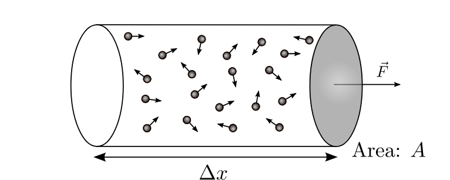

Forrige side🙂 🙁
Her er den:

Vi skal nå beregne den totale tiden det tar for alle partiklene i denne boksen å ha truffet veggen som ligger på høyre side av boksen. Først skal vi kun se på partiklene som har en gitt absoluttverdi vx av hastigheten. Du kan se disse partiklene i denne videoen. De røde partiklene er de med hastighet vx på vei mot veggen på høyre side, de blå partiklene har hastighet − vx og er på vei vekk fra veggen (dvs. de har allerede kollidert med veggen tidligere. Neste side